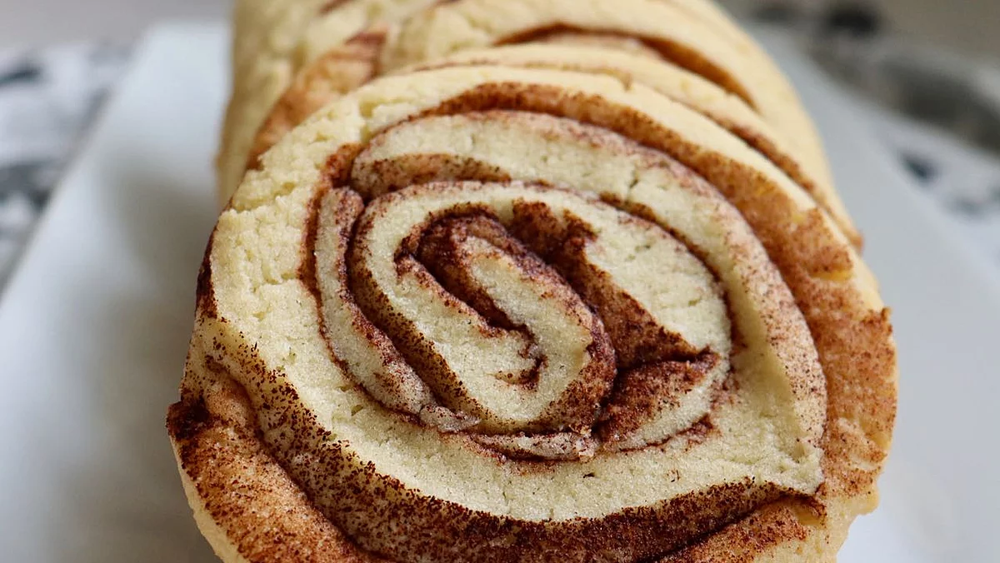

Cinnamons Roll Cookies By: cmiller2011

Description
These cinnamon roll cookies are a new twist to the cinnamony snickerdoodle
cookie.
Ingredients
- 2 & 3/4 cups all-purpose flour, plus more for rolling out dough
- 1 teaspoon of baking soda
- 1/2 teaspoon of fine salt
- 1/2 cup of butter, softened
- 1/2 cup of shortening
- 1 & 1/2 cups of white sugar
- 2 large eggs
- 2 tablespoons of ground cinnamon, or as desired
Steps
- Sift together all-purpose flour, baking soda, and salt in a bowl.
- Beat together butter and shortening using an electric mixer in
another bowl until combined; add sugar and continue beating until
light and fluffy, about 5 minutes. Pour in eggs, one at a time,
beating well after each addition. Pour in flour mixture and blend
until batter is smooth.
- Dust a work surface with flour and roll out cookie dough with a
floured rolling pin into a 1/4-inch thick rectangle. Sprinkle
cinnamon generously over the dough. Roll up the dough gently into
a log starting on one of the long sides. Wrap tightly in plastic
wrap and refrigerate for 2 to 3 hours.
- Preheat the oven to 350 degrees F (175 degrees C).
- Unwrap the dough log and carefully slice into 1/4-inch pieces
without smashing down the cookie. Place on an ungreased baking sheet.
- Bake in the preheated oven until lightly golden around the edges, about
12 minutes.